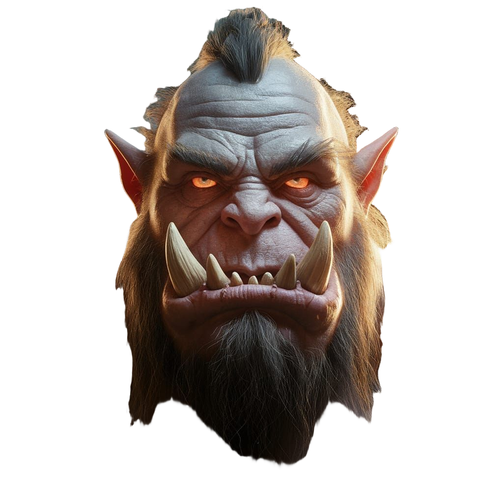

Which Path Will You Walk?
-
 Dwarf - Stone-born, iron-willed.
Dwarf - Stone-born, iron-willed.
-
 Elf - Grace of the ages, eyes of the stars.
Elf - Grace of the ages, eyes of the stars.
-
 Halfling - Small feet, boundless heart.
Halfling - Small feet, boundless heart.
- Tiefling - Fire in the blood, shadow in the soul.
-  Orc - Strength forged in battle.
Your DnD character is more than a role—it's the story you choose to live, the courage you carry, and the mark you leave on the world.
In every realm, a story stirs—waiting, watching, whispering your name. You may think you're just a player, but the truth is older than that. Somewhere in the weave of fate, a character has already been etched into legend, waiting for you to claim them. Are you the cunning Halfling who turns the tide with a smile and a sleight of hand? Or the brooding Tiefling whose fire hides a forgotten sorrow? Perhaps your strength lies in the unshakable will of a Dwarf, the wild grace of an Elf, or the untamed fury of an Orc. This isn't just a game—it's a reflection, a revelation. And all it takes is one step, one scroll, one choice to begin.